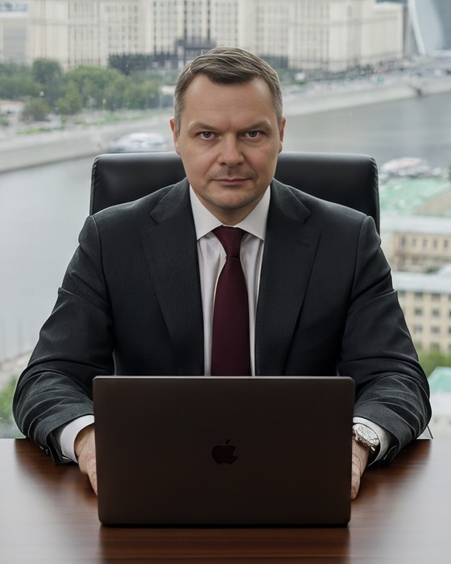

Специалист знает детали, руководитель — цели и сроки, заказчик — желаемый результат, пользователь — реальную работу. Самые дорогие ошибки возникают между ними. Я нахожу расхождения, перевожу между профессиональными языками и удерживаю исходную цель до результата для бенефициара.

Москва / Одинцово · MSK · удалённо
Инженер-теплоэнергетик. Проектировал автоматику и интерфейсы MasterSCADA, руководил инженерами, создавал проектный отдел, отвечал за сервис UHNWI, восемь лет вёл журнал поведенческих наблюдений. С 2024 года пишу код на Python с языковыми моделями.
Отделяю реальную потребность от первого предложенного решения. Проверяю всю цепочку: цель → требование → реализация → действие пользователя → результат для бенефициара.
Специалисту нужна точность, руководителю — решение и цена, пользователю — понятное действие, заказчику — управляемый результат. Нахожу расхождения и фиксирую общее понимание.
Наблюдаю, фиксирую повторяющиеся паттерны и отделяю факт от интерпретации. Это работает там, где человек не может, не хочет или не умеет точно объяснить проблему.
Не останавливаюсь на рекомендации: собираю документ, регламент, сценарий, прототип, интерфейс или код. Технический опыт позволяет оценить реализуемость и говорить с исполнителем предметно.
Model routing, cost-aware выбор модели, prompt/skill engineering, AI evaluation — держу это как рабочую практику, а не строчку в резюме. Разница видна в бюджете: задача решена за один заход дешёвой моделью там, где можно, и дорогой там, где нельзя.
Части проекта по умолчанию расходятся: каждая специализация тянет решение на свою волну. Возвращаю их к общей цели и к задачам друг друга — но не ради стройной схемы, а чтобы человек, для которого продукт сделан, видел заботу о себе на каждом шаге. Неискреннюю заботу спрятать нельзя: она вылезает, как торчащие нитки на изделии. Как это проверяю →
Не описание работ, а живой публичный код и живые страницы. Цифры в этом блоке проверяются переходом по ссылке.
Декомпозиция логистического потока, technology scouting оборудования, расчёт пропускной способности и пересборка архитектуры после обнаружения дорогого промежуточного звена. Отдельная HTML-модель показывает bottleneck и backlog при изменении линий, контуров, AMR, цикла и неравномерности.
Принимает голосовые, аудиофайлы и ссылки YouTube, включая Shorts. Транскрибирует, обрабатывает по шаблонам, даёт продолжить разговор с моделью. Мультипровайдерность, обход блокировок выкачки, восстановление состояния, статистика использования, Docker, деплой на Render.
Полный рабочий свод: физика площадки, 12 конструкций хуков, кривая удержания с разбором точек обрыва, 4 типа петель и схема наложения, арка персонажа и архетипы автора, покадровые раскадровки шортса и длинного видео, 7 структур постов, сериальность, метрики, 10 антипаттернов и копируемые шаблоны.
Коммерческие тексты, редактура нечитаемого технического текста, управление тоном обращения внутри одного письма, структуры под задачу — с разбором приёмов на фрагментах реальных работ. Пирамидальная, коммерческая, FAQ, комбинированная структуры.
Прикладной разбор модели Марк и Пирсон для премиального сервиса: четыре типа резидентов, которых я видел на элитном объекте, переписанные под каждого уведомления, методика «Артишок» в применении и стандарты для персонала под тень архетипа.
Честный UX-кейс по работающему прототипу: факт против гипотезы, user flow, три экрана с объяснением решений, UI-анатомия, семь базовых приёмов Figma и план usability-проверки. Неподтверждённые цифры не выдаются за результаты исследования.
Прогон сценариев, структуры страницы, desktop/mobile, консоли и accessibility-дерева. Баг-репорты содержат шаги, ожидание, факт, серьёзность и способ исправления; покрытие прогона указано отдельно.
Прототип на три экрана: как подать обязанность перед государством — ИНН, чек, налог — через выгоду мастера, а не через страх. Онбординг через ценность, дашборд «экономика твоей работы», автоматизация чека. Self-contained HTML без сборки.
Одинаковые задачи через доступные модели и разбор, где именно они ломаются: соблюдение инструкций, удержание формата, галлюцинации. Практический ответ на вопрос, какую модель ставить в бота при ограниченном бюджете.
Конвертер резервных копий Dynalist в Markdown для Obsidian: сохраняет иерархию, заметки, чекбоксы и статусы выполнения — всё, что теряется при обычном экспорте в plain text.
| Период | Роль и место | Суть работы |
|---|---|---|
| 2024 — сейчас | Python и языковые модели собственные проекты | Боты с транскрибацией и суммаризацией, промпт-архитектура, оценка качества ответов, деплой и релизный цикл, сравнение моделей под бюджет. |
| 2017 — сейчас | Школа-студия прикладного искусства основатель, методист, наставник | Методика обучения художественному тиснению по коже и построению орнамента с нуля: онлайн-среда, живые курсы, туры по городам России. Выпускники дошли до собственных брендов аксессуаров. Премия Губернатора МО, грант Минэкономразвития РФ. |
| 2018 — 2020 | Школа робототехники «Роболатория» продуктовый дизайнер, UX-идеолог (ГПХ) | Оптимизация внутренних процессов: организация работы, продажи, взаимодействие с администрацией. Разбирал, где в цепочке «администрация — преподаватель — родитель — ребёнок» теряются время и деньги. Личный кабинет и посадочные страницы, мастер-классы, запуск площадок. |
| 2016 — 2018 | Инженерно-производственная компания технический директор, развитие и PR | Техническое направление и развитие: продукт, сайт, привлечение заказчиков. Калькуляторы подбора оборудования, схемы подключения, перевод характеристик в язык задач заказчика. Сложное B2B с длинным циклом сделки. |
| 2014 — 2017 | Элитный КП «Сады Майендорф», Жуковка руководитель службы клиентского сервиса и эксплуатации | Резиденты категории UHNWI. Разделил их на типы по поведению и ожиданиям, разобрал путь обращения от звонка до закрытия заявки. Регламенты и юридические извещения → персональные уведомления, предупреждающее информирование о работах, авариях и счетах. Обучение персонала снятию напряжения. CRM заявок, нормативы времени ответа. |
| 2007 — 2014 | АО «Одинцовская теплосеть», проекты для Мособлгаза инженер-проектировщик АСУ ТП, руководитель группы инженеров | Руководил группой инженеров в службе режимов газоснабжения. Проектировал индивидуальные тепловые пункты и котельные по разделам автоматизации: логика, контроллеры, чертежи в AutoCAD. Создал проектно-конструкторский отдел — 4 месяца с нуля до трёх человек. Телеметрия целиком: преобразователи 0–1 Ом → 4–20 мА своими руками, затем мнемосхемы в MasterSCADA. Переработал шаблоны писем и договоров для промышленных потребителей газа. |
| 2003 — 2004 | Веб-мастер, трафик, affiliate marketing самостоятельно | Сайты, платный трафик, партнёрские программы. Считал связку «объявление — страница — оплата» на своих деньгах. |
| 1998 — 2007 | Казино «Метелица» и «Капитель», Москва инспектор, старший оператор видеонаблюдения | «Метелица», Новый Арбат: 06.1998–02.2003 и 07.2004–2007. «Капитель»: 01.2004–05.2004. Журнал наблюдений по видеонаблюдению: связка «игрок — крупье», fraud analytics, ошибки игры и разбор причин, мотивации участников; отдельный контур по персоналу. Финансовая отчётность по кассам и столам. Обучил лично больше 400 человек в трёх службах. |
| МГИУ, 2012 | Инженер-теплоэнергетик (ТГВ). Системный анализ, математическое моделирование процессов. |
| 1994 — 1998 | Высшее военное командно-инженерное училище РВСН, Краснодар. Командный факультет, гражданская специальность — инженер-электромеханик. Не окончил. |
| AutoCAD, 2009 | Техническое черчение и инженерная графика. |
| ПЭАТ, 2007 | Многодневное обучение у автора метода, Живорада Славинского, Москва. Сертификат не сохранился, видеозапись участия есть. |
| Britt Nantz, США | Художественное тиснение по коже растительного дубления, построение орнамента. |
| Копирайтинг | Обучение коммерческому копирайтингу с практикой: структуры текста, тон обращения, работа с возражениями, редактура под чтение с экрана. |
| Архетипы бренда | Модель Марк и Пирсон: 12 архетипов, методика «Артишок», уровни проявления, тень архетипа. Применяю как рабочий инструмент позиционирования. |
| Английский | Читаю, говорю, понимаю. Рабочий созвон выдерживаю. Свежего сертификата нет, готов пересдать под оффер. |
| Python и LLM | Практикой с 2024: промпт-архитектура (системные промпты, few-shot, chain-of-thought, RAG-контексты), оценка качества, API OpenAI / DeepSeek / Ollama, Docker, GitHub Actions, деплой. |